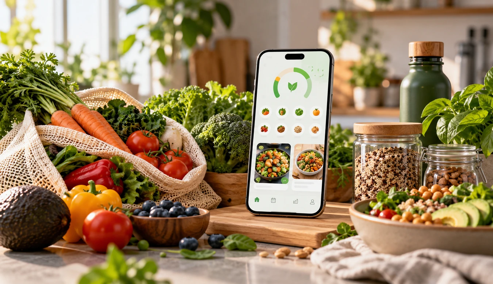
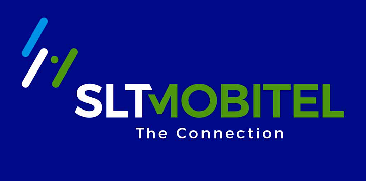

IoTMachine Learning
SeaGuardian
Intelligent fish storage monitoring and remaining shelf-life prediction using IoT and Machine Learning.
Find repository on GitHub ↗An Information Technology undergraduate at SLIIT passionate about building meaningful software solutions with modern technologies, and exploring AI, IoT and real-world applications.
Intelligent fish storage monitoring and remaining shelf-life prediction using IoT and Machine Learning.
Find repository on GitHub ↗Facility and resource management with bookings, ticketing and role-based access control.
Find repository on GitHub ↗
Food waste reduction platform with inventory management, expiry tracking, and donation workflows.
Find repository on GitHub ↗Internship project at SLT-MOBITEL featuring REST APIs, authentication, team workflows and notifications.
Find repository on GitHub ↗Three selected projects. Repository details refresh from GitHub when you open this page.
These three cards refresh public repository descriptions and update dates on page load. New repositories are not added automatically.
I'm Bhagya Navodyani, an Information Technology undergraduate at SLIIT with a strong interest in software development, machine learning, IoT and real-world problem solving.
My journey combines hands-on full-stack development, applied machine learning and connected-device research. During my six-month internship at SLT-MOBITEL, I worked with Java, Spring Boot, React and MySQL, contributing to API development, secure authentication, testing and team coordination.
Today, I build projects that solve practical challenges—from smarter campus resource management to IoT-powered fish-storage monitoring. I care about maintainable code, thoughtful user experiences and learning how to take ideas from an initial prototype to a reliable product.
More About Me →My academic foundation and professional qualifications, alongside continuous technical learning.
Sri Lanka Institute of Information Technology (SLIIT)
Undergraduate degreeAAT Sri Lanka
Professional qualificationSix months of hands-on development, teamwork, and real-world delivery.

6-month internshipContributed to production-oriented web application features and coordinated work within the internship team.
Two professional formats for different applications.
Clean, searchable, text-based PDF designed for online job applications.
Download ATS CV ↧A polished, portrait-based PDF for sharing directly with recruiters and contacts.
Download Photo CV ↧Interested in software engineering, full-stack development or AI collaborations? I'd love to hear from you.
✉ Contact Us